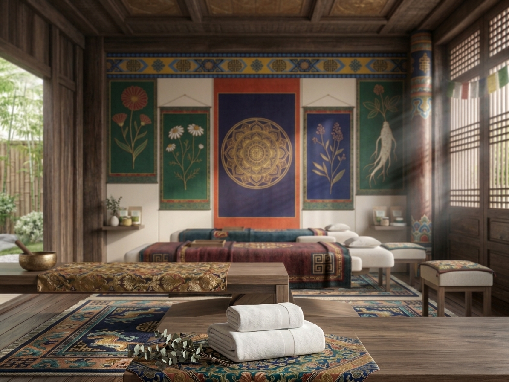
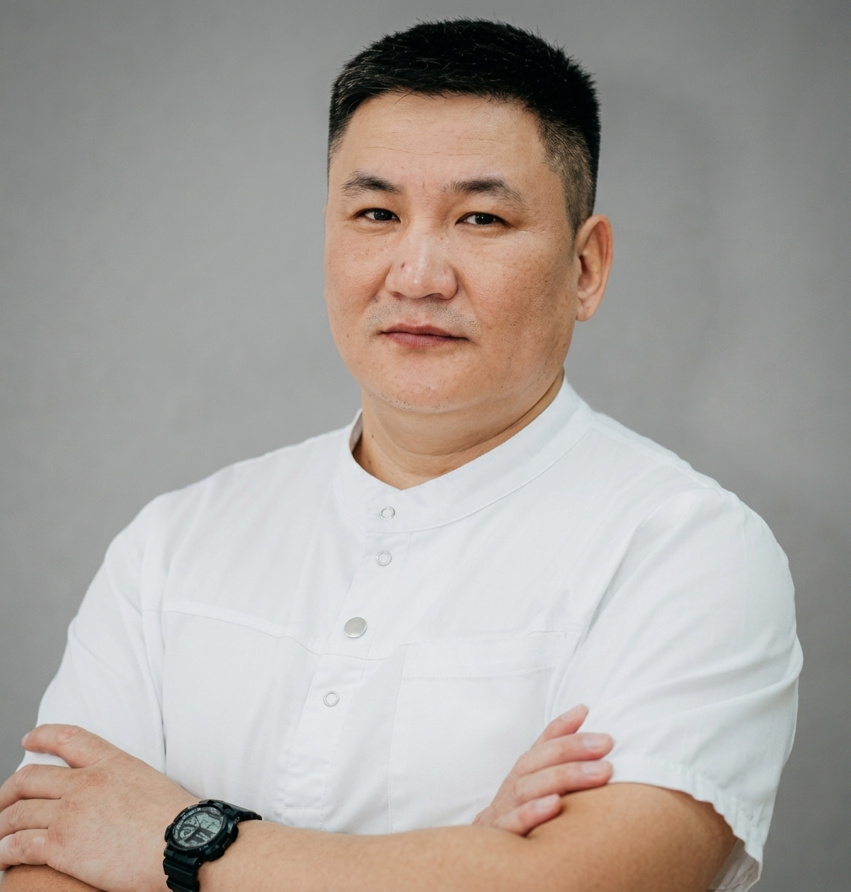

Лечебный и классический массаж
Работа с опорно-двигательным аппаратом, нервной и сердечно-сосудистой системой. Снимает боль, возвращает подвижность.
Центр восточной медицины и восстановления
Тибетские и бурятские традиции оздоровления: массаж, постановка банок, иглорефлексотерапия и гирудотерапия в Санкт-Петербурге.
Что в имени
«Дархан» с бурятского и монгольского — «свободный», «неприкосновенный», а также «мастер» и «кузнец». В нашем центре это имя — знак уважения к древним знаниям и заботы о теле современного человека.
Мы соединяем восточную философию и проверенные методики восстановления. Каждый сеанс — это не процедура по списку, а внимательная работа с телом: после массажа мастер ставит банки, иглы или пиявки там, где это действительно нужно.


Мастер
Массажист, рефлексотерапевт. Врачебный стаж с 2014 года.
Образование: Байкальский базовый медицинский колледж (Республика Бурятия), специальность «Лечебное дело», переподготовка по «Медицинскому массажу». Владеет классическим, лечебным, баночным, сегментарным и спортивным массажем.
«Золотые руки» — так о работе Дамдина и его команды пишут благодарные гости центра «Дархан».
Записаться к мастеруПрактики Дархан
Полный сеанс восстановления — массаж плавно переходит в баночную терапию, иглорефлексотерапию или гирудотерапию по показаниям.
Работа с опорно-двигательным аппаратом, нервной и сердечно-сосудистой системой. Снимает боль, возвращает подвижность.
Постановка медицинских банок усиливает кровоток, снимает зажимы и запускает глубокое расслабление мышц.
Тонкие иглы по точкам активизируют ресурсы организма, помогают при радикулите, невралгии и бессоннице.
Пиявки и травяные согревающие практики очищают и восстанавливают — по древним восточным рецептам.
Мягкие техники и звук поющих чаш выводят отёки, снимают стресс и возвращают лёгкость.
Подготовка и восстановление после нагрузок, профилактика травм для активных людей.
Мастер из Бурятии, где восточная медицина — живая традиция, а не тренд.
Более десяти лет практики и сотни восстановленных спин, рук и сна.
Массаж, банки, иглы и травы — в одном сеансе, где это нужно телу.
Без лишнего и без назначений «про запас». Только то, что помогает.
Голоса гостей
«Огромная благодарность Дамдину и Татьяне! Долго мучалась с болями в спине, нигде не могли помочь. Только ваши золотые руки.»
«Всё прекрасно! Подняли на ноги! Пришла в нервном состоянии, рука не поднималась, бессонница мучала. Спасибо вам огромное!»
Ваш отзыв поможет другим найти путь к здоровью. Оставьте его на странице центра на Яндекс Картах.
Контакты
Центр «Дархан» уважает ваше право на конфиденциальность. Мы собираем только те данные, которые вы оставляете добровольно (имя и телефон при записи), и используем их исключительно для связи по вашему обращению.
Персональные данные не передаются третьим лицам, за исключением случаев, предусмотренных законодательством РФ. Вы можете запросить удаление своих данных в любой момент.
Сайт может использовать файлы cookie для корректной работы и статистики посещаемости. Подробнее — в политике cookie.
Cookie — это небольшие текстовые файлы, сохраняемые в вашем браузере. Они помогают запомнить ваши предпочтения и понять, как улучшить сайт.
Необходимые — обеспечивают работу сайта. Аналитические — анонимно показывают, какие разделы популярны. Мы не используем cookie для рекламы.
Вы можете отключить cookie в настройках браузера, но тогда часть функций сайта может работать некорректно.